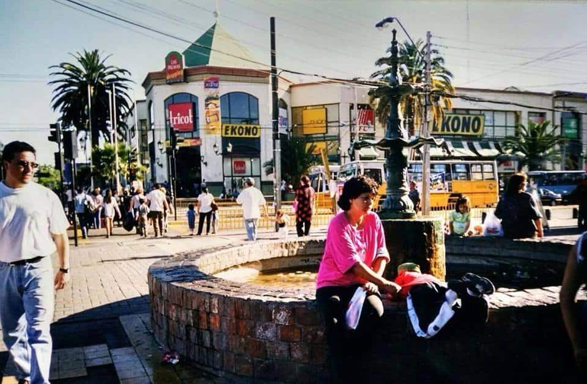

Plaza de Maipu

Maipú es una comuna ubicada en la Región Metropolitana de Santiago, Chile. La Plaza de Maipú es un espacio público importante y emblemático dentro de la comuna. A continuación, te brindo una descripción de la Plaza de Maipú:
La Plaza de Maipú es una amplia y arbolada plaza situada en el centro de la comuna. Es considerada un lugar histórico, ya que en este mismo sitio tuvo lugar la Batalla de Maipú el 5 de abril de 1818, un enfrentamiento clave en la independencia de Chile.